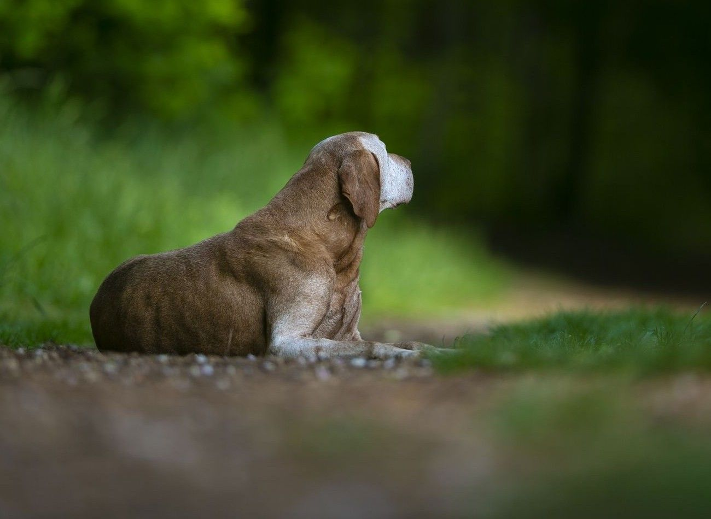

16. 1. 2026Proběhlo
Seznamovací procházka
Seznamovací procházka pro nové zájemce o výcvik na sezónu 2026. 9:30. Mrákavy.

Termíny zkoušek a akcí v roce 2026. Akce budou postupně doplňovány, propozice na jednotlivé akce budou včas dodány. Počet psů je omezen.
Seznamovací procházka pro nové zájemce o výcvik na sezónu 2026. 9:30. Mrákavy.
Seznamovací procházka pro nové zájemce o výcvik na sezónu 2026. 17:00. Nebušice.
Přednáška na téma zkušební řády a úvod do lovecké kynologie. Více info v rozvrhu.
Celodenní intenzivní výcvik aportů. Opakování po zimě. Kladno. Více info v rozvrhu.
Celodenní intenzivní výcvik aportů. Opakování po zimě. Kladno. Více info v rozvrhu.
Úvod pro práci na barvě. Celodenní nácviky barev a stop. Začátečníci i pokročilí. Výcvik proběhne s ohledem na počasí. Kladno. Více info v rozvrhu.
Přednáška na téma chovatelství. Více info v rozvrhu.
Celodenní intenzivní příprava na lesní zkoušky. Kladno. Více info v rozvrhu.
Víkendová příprava na podzimní zkoušky pro začátečníky i pokročilé. Honitba Číčovice u Prahy. Více v propozicích.
Intenzivní příprava na zkoušky vloh. Místo bude upřesněno. Více info v rozvrhu.
Teorie a nácvik na svody a výstavy psů. Teoretické uvedení do světa výstav psů. Předpisy, názvosloví, tipy z praxe apod. Praktický nácvik pod dohledem zkušených lektorů handlingu s více než 20ti lety praxe a mnoha nejvyššími umístěními. Vítání jsou zkušení vystavovatelé i úplní začátečníci a štěňátka. Více v propozicích. Pro klienty loveckého výcviku možnost přihlašování přes rozvrh. Lektoři: Ing. Zuzana Čechová, Ing. Pavlína Píchová, Bc. Alexa Matelová. Místo: areál střelnice Svrkyně - Velké Přílepy.
Přednášky vhodné pro všechny majitele a chovatele psů. V dopoledním bloku přednáší MVDr. Věra Vtelenská. Základní veterinární minimum a první pomoc psům - zaměření především na letní a jarní úrazy psů při výcviku i běžném životě. Odpolední blok je zaměřen na základy genetiky pro chovatele psů. Přednáší Ing. Silvie Neradilová Ph.D. V obou blocích bude možnost diskuze, otázek. Více v propozicích. Pro klienty loveckého výcviku možnost přihlašování přes rozvrh. Místo: areál střelnice Svrkyně - Velké Přílepy.
Příprava na zkoušky vloh. Honitba Čelákovice. Více v propozicích.
Intenzivní příprava na podzimní zkoušky. Kladno. Více info v rozvrhu.
Pobytová víkendová příprava na zkoušky retrívrů, slídičů. OVVR, PZ, ZV. RZ Lučkovice. Více v propozicích.
Pobytová víkendová příprava na podzimní zkoušky ohařů. RZ Lučkovice. Více v propozicích.
Pobytový víkend pro plemena jezevčíků, teriérů, honičů, slídičů. Zaměřený na stopy, barvy a ostatní lesní disciplíny. Kašperské hory. Více v propozicích.
Víkendová pobytová příprava na zkoušky z vodní práce. Honitba MS Chanovice. Horažďovce u Klatov. Více v propozicích.
Pobytová příprava na lesní zkoušky. Spolek Kersko. Více v propozicích.
Pohár pro ohaře starší 8 let – vybrané disciplíny z lovecké praxe. Jižní Čechy. Více viz propozice.
Výcvikový tábor - Lučkovice. Pro všechny úrovně výcviku.
Přednáška na téma „Úvod do lovecké praxe“.
Teorie pro začínající kynologii, vůdce a nováčky ve světě kynologie lovecké i nelovecké. Pro ty, co se chtějí vyznat a vědět, co je nadále ve výcviku čeká. Teorie bez psů. PŘEDNÍ KOPANINA.
Setkání, pokec, předání odznáčků, ukončení sezóny, hodnocení sezóny a info k nadcházející. Restaurace u Čechů.